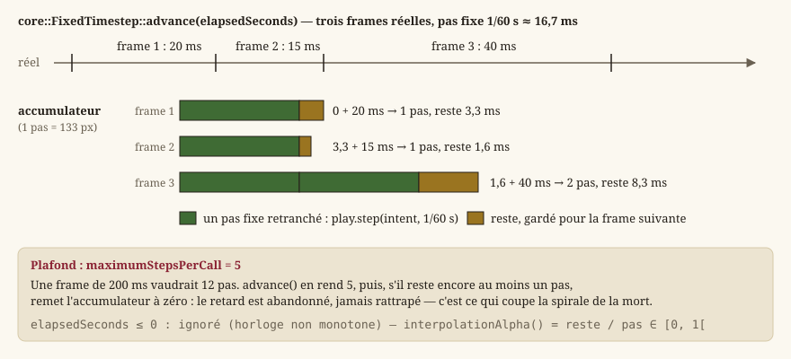

Boucle de jeu et pas de temps fixe
Cette page part de zéro : elle explique ce qu'est une boucle de jeu pour qui n'en a jamais écrit, puis détaille comment ce moteur la construit. Le périmètre de code est Source/Core/Time — un seul en-tête, FixedTimestep.h — et les deux endroits de HMI qui s'en servent ou en tiennent lieu.
Qu'est-ce qu'une boucle de jeu ?
Une application classique (un formulaire, un outil en ligne de commande) est passive : elle attend un événement (clic, entrée clavier, requête réseau) puis réagit, et ne fait rien entre deux événements. Un jeu vidéo, lui, doit donner l'illusion d'un monde vivant en continu : un personnage continue de marcher tant que la touche reste enfoncée, sans nouvel événement. Il faut donc une boucle qui tourne en permanence, tant que le jeu est ouvert, et qui à chaque tour :
- lit les entrées disponibles (clavier, souris, fenêtre) ;
- fait avancer l'état du jeu (« mettre à jour la logique ») ;
- dessine l'état courant à l'écran (« rendre ») ;
- affiche l'image dessinée (« présenter »).
Un tour de cette boucle correspond à une frame (image). Un jeu qui tourne à 60 frames per second (FPS) exécute ces quatre étapes 60 fois par seconde, soit un tour toutes les ~16,7 ms. Dans ce moteur, Qt possède la boucle d'événements ; la logique et le rendu s'y branchent de deux façons (IHM Qt — deux applications, deux technologies) :
- dans le jeu,
hmi::WorldModelavance l'exploration sur unQTimerde précision (hmi::WorldModel::STEP_MILLISECONDS, 16 ms), et la surface de rendu (hmi::WorldViewportItem) redessine quand la scène a changé ; - dans l'essai immédiat de l'éditeur,
hmi::EditorViewportavance sur unQTimerde 16 ms ; chaque tir mesure le temps écoulé, avance la simulation par pas fixes, puis recompose et peint.
Le piège du framerate variable
La difficulté est que la durée réelle d'une frame varie : selon la machine, la charge du système, ou une fenêtre minimisée un instant, une frame peut durer 16 ms ou 200 ms. Une écriture naïve de la mise à jour ressemblerait à :
while (running) {
float deltaTime = measureTimeSinceLastFrame(); // variable, imprévisible
update(deltaTime); // avance la simulation de deltaTime
render();
}Ici, un personnage qui marche se déplacerait de vitesse × deltaTime à chaque frame. Sur une machine rapide (deltaTime petit), la marche avancerait par petits pas fréquents ; sur une machine lente (deltaTime grand), par grands pas rares. Le résultat numérique final diffère selon la vitesse de la machine : mêmes entrées, trajectoires différentes. Deux conséquences concrètes :
- le jeu n'est pas reproductible : un test automatisé qui rejoue une séquence d'entrées peut obtenir un résultat différent d'une exécution à l'autre, ou d'une machine à l'autre ;
- le ressenti change avec la machine : le héros ne s'arrête pas au même endroit contre un mur, et un grand pas peut sauter par-dessus un obstacle fin quand
deltaTimegrandit.
C'est ce défaut que le pas de temps fixe élimine.
Le principe du pas de temps fixe
Idée : au lieu de faire avancer la logique de la durée réelle (variable) de la frame, on la fait avancer par incréments constants, par exemple toujours 1/60 s. Le nombre d'incréments à exécuter à chaque frame dépend du temps réel écoulé, mais chaque incrément individuel voit toujours exactement la même durée. La logique de jeu (l'exploration) ne connaît donc jamais de deltaTime variable — seulement des pas identiques et répétés — ce qui garantit le déterminisme : mêmes entrées → exactement la même trajectoire, quelle que soit la vitesse de la machine (EX-NFR-002, EX-ARCH-030). C'est indispensable pour des tests reproductibles et pour un ressenti de jeu stable.
Le rendu, lui, n'a pas besoin de cette contrainte : dessiner une fois de plus ou de moins par seconde ne casse aucun invariant logique. Il reste donc cadencé sur le temps réel, une fois par frame — c'est le découplage entre logique (fixe) et rendu (variable).
L'accumulateur : core::FixedTimestep
Le mécanisme qui convertit un temps réel variable en un nombre entier de pas fixes s'appelle un accumulateur. Principe :
- à chaque frame, on ajoute le temps réel écoulé à un compteur (
_accumulator) ; - tant que ce compteur contient au moins un pas fixe complet, on retranche un pas fixe du compteur et on compte un pas à exécuter ;
- ce qui reste dans le compteur (moins d'un pas fixe) est conservé pour la frame suivante — il ne se perd jamais, sinon les erreurs d'arrondi s'accumuleraient et la simulation dériverait.
{kind=link}

La classe ne mesure pas le temps elle-même : elle n'a aucune dépendance système, le temps réel écoulé lui est passé en paramètre. C'est ce qui la rend testable en isolation — un test lui donne des durées choisies et vérifie le nombre de pas rendus, sans horloge, sans attente.
core::FixedTimestep::FixedTimestep
Le constructeur prend deux paramètres, tous deux avec une valeur par défaut :
| Paramètre | Défaut | Rôle |
|---|---|---|
fixedDeltaSeconds | 1/60 s | Durée d'un pas de simulation. C'est la valeur que reçoit toute la logique. |
maximumStepsPerCall | 5 | Plafond du nombre de pas rendus par appel à advance() — la protection contre la spirale de la mort, ci-dessous. |
L'accumulateur part à zéro : le premier appel à advance() ne rend un pas que si le temps écoulé transmis atteint déjà un pas complet.
core::FixedTimestep::advance
advance(elapsedSeconds) implémente exactement le mécanisme décrit plus haut et renvoie le nombre de pas à exécuter :
core::FixedTimestep clock; // pas fixe par défaut : 1/60 s
const int steps = clock.advance(elapsedSeconds);
for (int i = 0; i < steps; ++i) {
play.step(intent, clock.fixedDeltaSeconds()); // toujours 1/60 s, jamais elapsedSeconds
}
render(); // une seule fois, quel que soit le nombre de pasTrois détails de son contrat méritent d'être connus, parce qu'ils ne se devinent pas :
- un temps écoulé négatif ou nul est ignoré : l'accumulateur n'avance pas, aucun pas n'est rendu. Une horloge non monotone (rare, mais observée sur certaines machines après une mise en veille) ne fait donc jamais reculer la simulation ;
- le nombre de pas rendus est plafonné par
maximumStepsPerCall; - si le plafond est atteint et qu'il reste encore au moins un pas complet dans l'accumulateur, celui-ci est remis à zéro : le retard non rattrapé est abandonné, pas reporté. Sans cette remise à zéro, le plafond ne ferait qu'étaler la rafale sur plusieurs frames, et la spirale décrite plus bas resterait possible.
C'est, à peu de chose près, hmi::EditorViewport::stepPlaytest : l'essai immédiat fait avancer un hmi::WorldPlay (la même exploration que le jeu) de steps pas, puis dessine. Le jeu, lui, se passe d'accumulateur : son QTimer tire déjà à intervalle fixe, et chaque tir est un pas de STEP_MILLISECONDS — un retard du minuteur décale le pas dans le temps réel, jamais sa durée simulée.
core::FixedTimestep::fixedDeltaSeconds
Renvoie la durée d'un pas, telle que passée au constructeur. C'est la seule durée que la logique doit recevoir : la passer plutôt qu'écrire 1.0f / 60.0f à chaque site d'appel garantit qu'un cadenceur construit avec un autre pas (un test à 1/30 s, par exemple) reste cohérent partout.
Exemple chiffré
Avec un pas fixe de 1/60 s (≈ 0,01667 s) :
| Frame | Temps réel écoulé | Accumulateur avant | Accumulateur après | Pas exécutés |
|---|---|---|---|---|
| 1 | 0,020 s | 0,000 s | 0,003 s | 1 |
| 2 | 0,015 s | 0,003 s | 0,018 s → 0,001 s | 1 |
| 3 | 0,040 s | 0,001 s | 0,041 s → 0,008 s | 2 |
À la frame 3, le temps réel écoulé (0,040 s) dépasse deux pas fixes (2 × 1/60 ≈ 0,033 s) : la boucle exécute deux mises à jour logiques avant de rendre une seule image. C'est normal et voulu — le rendu peut « sauter » plusieurs pas de simulation sans jamais désynchroniser la logique.
La « spirale de la mort »
Si une frame est anormalement longue (fenêtre déplacée, point d'arrêt du débogueur, machine gelée un instant), le temps écoulé peut représenter des dizaines de pas fixes d'un coup. Exécuter tous ces pas d'affilée prend du temps réel, ce qui retarde la frame suivante, qui devra à son tour rattraper encore plus de pas — un cercle vicieux appelé la spirale de la mort (spiral of death), qui peut figer le jeu indéfiniment. FixedTimestep s'en protège avec maximumStepsPerCall : le nombre de pas renvoyé par advance() est plafonné (5 par défaut) et le surplus est abandonné — la simulation « perd » du temps réel dans un cas extrême plutôt que de bloquer. Un joueur qui revient d'une minimisation retrouve un héros immobile là où il l'avait laissé, pas un héros qui rejoue une minute de marche en accéléré.
core::FixedTimestep::interpolationAlpha
Après avoir consommé tous les pas fixes disponibles, il peut rester une fraction de pas dans l'accumulateur (entre 0 et 1 pas). interpolationAlpha() l'expose comme un facteur dans [0, 1[ (reste / pas), qui permettrait au rendu d'interpoler entre la position du pas précédent et celle du pas courant, pour lisser le mouvement quand le rendu tourne plus vite que la simulation. Aucun rendu ne s'en sert aujourd'hui : l'image montre la dernière position simulée. La valeur existe parce qu'elle ne coûte rien et qu'un jour où le rendu dépassera 60 Hz sur une marche visible, c'est la première chose qu'on voudra.
Les frames sans pas de simulation et les entrées
Quand le rendu dépasse 60 Hz, certaines frames réelles n'exécutent aucun pas fixe (steps == 0) — l'accumulateur n'a pas encore atteint un pas complet. Ces frames dessinent quand même (le rendu est découplé). Elles imposent en revanche une précaution sur les entrées : un appui capturé sur une telle frame doit survivre jusqu'à ce qu'un pas de simulation le lise, au lieu d'être effacé par la frame suivante. C'est pourquoi l'essai immédiat note la demande d'interaction (E/Espace) dans un drapeau que le premier pas consommé remet à zéro, et non la frame de rendu — voir Entrées et actions logiques. Sans cette précaution, à 144 Hz environ deux appuis sur trois seraient perdus.
Conséquence pratique pour tout le code de simulation
Toute la logique de jeu (core::ExplorationSession::update, appelée par hmi::WorldPlay::step) reçoit un pas constant et jamais le temps réel. C'est pour cela que les tests peuvent appeler update(..., 1.0f/60.0f) en boucle, sans horloge ni minuteur : c'est exactement ce que fait le jeu en exécution normale, pas une approximation. Un système qui lirait le temps réel directement romprait cette garantie et deviendrait, par construction, non déterministe et difficile à tester.
Note — Le même principe gouverne le hasard :
core::DeterministicRandomne lit jamais l'horloge, il reçoit une graine (Mathématiques du moteur). Temps et hasard sont les deux seules sources de non-reproductibilité d'une simulation ; le moteur les injecte toutes deux de l'extérieur.
Ce qui vit au temps réel, et non au pas fixe, est par construction hors de la simulation : l'animation des figurines du Colisée (hmi::ArenaAnimationDriver::advance, cadencée par la frame de rendu) fait vivre l'image sans rien décider du combat, qui reste au tour par tour dans Core.
Voir aussi
core::FixedTimestep.hmi::WorldModel(pas du jeu),hmi::EditorViewport(essai immédiat),hmi::WorldPlay.- IHM Qt — deux applications, deux technologies, Écrans, navigation et boucle de jeu (navigation).
- ECS : entités, composants, systèmes — les entités que la logique manipule, et
core::World::updatequi reçoit ce pas. - Mathématiques du moteur — le hasard déterministe, l'autre moitié de la reproductibilité.
exigences-non-fonctionnelles.md— le déterminisme exigé (EX-NFR-002).